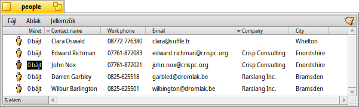

Magyar
Magyar Català
Català Deutsch
Deutsch English
English Español
Español Français
Français Italiano
Italiano Polski
Polski Português
Português Português (Brazil)
Português (Brazil) Română
Română Slovenčina
Slovenčina Suomi
Suomi Svenska
Svenska 中文 ［中文］
中文 ［中文］ Русский
Русский Українська
Українська 日本語
日本語Jellemzők
A jellemzők azok adatmezők, amik a fájlhoz tartoznak, ám mégsem a fájl részei, például a méret számításánál nem játszanak szerepet, és anélkül másolhatóak, vagy módosíthatóak, hogy a fájlhoz hozzányúlnánk. A rendszer ezeket a jellemzőket használja például a fájl mérete, típusa vagy az utolsó módosítás idejének tárolására. Ez hasonlít a többi operációs rendszerben megszokottakhoz.
Amiben különbözik az az, hogy bármilyen jellemzőt bármilyen fájlhoz hozzá tudunk adni, és megjeleníteni, szerkeszteni is tudjuk egy Nyomkövető ablakban. Pontosan meg kell határozni a fájlhoz adandó jellemző típusát (például string (szöveg), integer (szám) vagy time (idő)), a nevét és leírást.
A fájlnak ugyanakkor nem kell, hogy legyen bármilyen tartalma. Példának nézzük meg ezeket a névjegyeket:
Amint látja, ezek mind 0 méretű fájlok hozzájuk csatolt jellemzőkkel, ahol "Erős István" E-mail jellemzője éppen szerkesztés alatt áll a Nyomkövetőben.
Ha ezeket a jellemzőket még indexeljük is, mint a névjegyeket, leveleket vagy audió fájlokat alap esetben, akkor ezek szintén kereshetőek lesznek a Haiku gyors kereső rendszerében.
 Jellemzők a Nyomkövetőben
Jellemzők a Nyomkövetőben
A jellemzők megjelenítése nagyon hasonlít egy adatbázis- vagy táblázatkezelőhöz. A Nyomkövetőben megadható, hogy mely jellemzők jelenjenek meg (oszlopok) és hogy hogyan akarjuk rendezni a fájlokat (sorokat).
Ehhez nyissunk meg egy Nyomkövető ablakot, kattintsunk a menüre, és válasszuk ki azt, amit meg szeretnénk jeleníteni. Ezen kívül az oszlopfejléceken jobb gombbal kattitntva is ki meg tudjuk őket adni. Az oszlopokat is átrendezhetjük, csupán az egérrel mozgassuk az oszlopfejléceket. A nem kívánt oszlopot kihúzva az ablakból gyorsan eltüntethetjük azt.
A két oszlop közti vonalon duplán kattintva az oszlopok szélessége az optimális méretre állíthatóak.
Az oszlopfejlécen kattintva növekvő vagy csökkenő sorrendbe rendezhetjük a listát. Másodlagos rendezés is megadható, ehhez csupán lenyomva kell tartani a SHIFT billentyűt, mialatt az egérrel az következő oszlopon kattintunk. Épp úgy lehet például a névjegyeket egyidejűleg rendezni cég szerint és név szerint. A fenti képernyőképen látható is erre egy példa. A másodlagos rendezés halvány színű jellel van feltüntetve az oszlopfejlécen.
Ezen jellemzők szerkesztése épp olyan egyszerű, mint átnevezni egy fájlt: csak kattintsunk egy bejegyzésen, vagy nyomjuk le az ALT E kombinációt, majd keressük meg a módosítandó jellemzőt a TAB és SHIFT TAB billentyűkkel. ESC lenyomásakor a szerkesztés félbeszakad a módosítások mentése nélkül.
Jellemzők a Terminálban
Ha a parancssort részesíted előnyben, vagy szkriptek írását tervezed, akkor több parancs is a rendelkezésedre áll, amikkel kezelni tudod a jellemzőket a Terminálban.
listattr
A listattr megjeleníti a fájl összes jellemzőjét a hozzájuk tartozó adatok nélkül.
használat: listattr 'fájl' ['fájl' ...]
Például:
~/people ->listattr Ecet\ Tibor
File: Ecet Tibor
Type Size Name
----------------------------------------------------------
MIME String 21 "BEOS:TYPE"
Text 11 "META:name"
Text 7 "META:nickname"
Text 1 "META:company"
Text 14 "META:country"
Text 6 "META:state"
Text 5 "META:zip"
Text 7 "META:city"
Text 15 "META:address"
Text 17 "META:hphone"
Text 1 "META:wphone"
Text 1 "META:fax"
Text 1 "META:url"
Text 21 "META:email"
Text 12 "META:group"
Raw Data 20 "_trk/pinfo_le"
140 bytes total in attributes.
Azon túl, hogy a "META:*" jellemzők tartalmazzák a névjegy adatait, két másik jellemzőt is kezel a rendszer:
A BEOS:TYPE tartalmazza a fájl típusát, mint MIME szöveget, esetünkben "application/x-person". Ez alapján megkapjuk az alapértelmezett ikont és a programot, mely kezeli a fájlt.
A "_trk/pinfo_le" jellemző tartalmazza a Tracker-ben az ikon pozícióját.
catattr
A catattr megjeleníti a megadott jellemzőhöz tartozó adatot.
használat: catattr [--raw|-r] jellenző_neve fájl1 [fájl2...]
Például:
~/people ->catattr META:city Ecet\ Tibor Ecet Tibor : string : Hatvan
addattr
Az addattr hozzáad egy jellemzőt a fájlhoz és/vagy adatokkal tölti fel.
használat: addattr [-t típus] jellemző érték fájl1 [fájl2...]
vagy: addattr [-f érték-fájlból] [-t típus] jellemző fájl1 [fájl2...]
A típus ezek egyike:
string, mime, int, llong, float, double, bool, icon, raw
vagy szám-érték (például 0x1234, 42, 'ABCD', ...)
Az alapértelmezett a "string"
Nos, tegyük fel, hogy Tibor elválal egy állást a Cukor Kft-nél, így most feltöltünk egy eddig üres jellemzőt adattal (aminek a típusa "string" (szöveg)):
~/people ->addattr -t string META:company Cukor\ Kft Ecet\ Tibor
rmattr
Az rmattr egy teljes jellemzőt kitöröl a fájlból.
használat: rmattr [-p] jellemző fájl1 [fájl2...]
'jellemző' a fájl egyik jellemzőjének a neve
Ha a '-p' meg van adva, akkor a 'jellemző' mintaként szolgál.
Például a "Fax" jellemzőt üresen is hagyhatjuk, de teljesen ki is törölhetjük azt:
~/people ->rmattr META:fax Ecet\ Tibor
copyattr
A copyattr jellemzőket másol egy vagy több fájlból egy másik fájlba. Alap esetben a fájl tartalma nem kerül átmásolásra.
használat: copyattr <opciók> <honnan> [ ... ] <hova>
Ha a jellemzők másolásával együtt magát a fájlt is át szeretné másolni, akkor adja meg a "-d" vagy a "--data" opciót is.
További segítséget kaphatsz ezekről a parancsokról, illetve az opciókról ha a parancs után megadod a "-h" vagy a "--help" opciót.